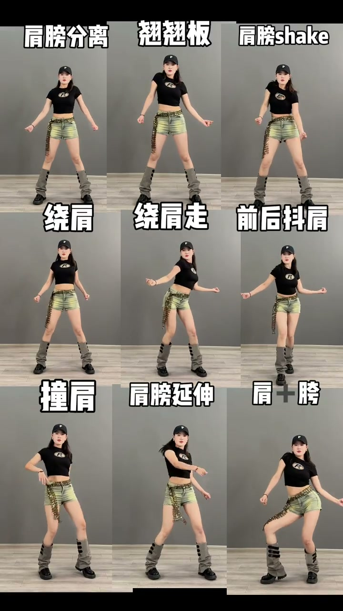
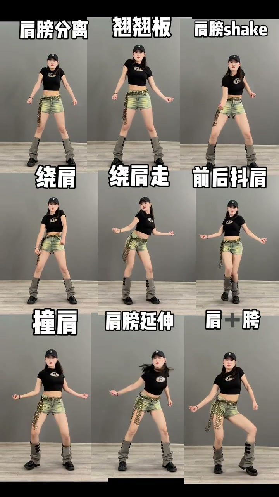
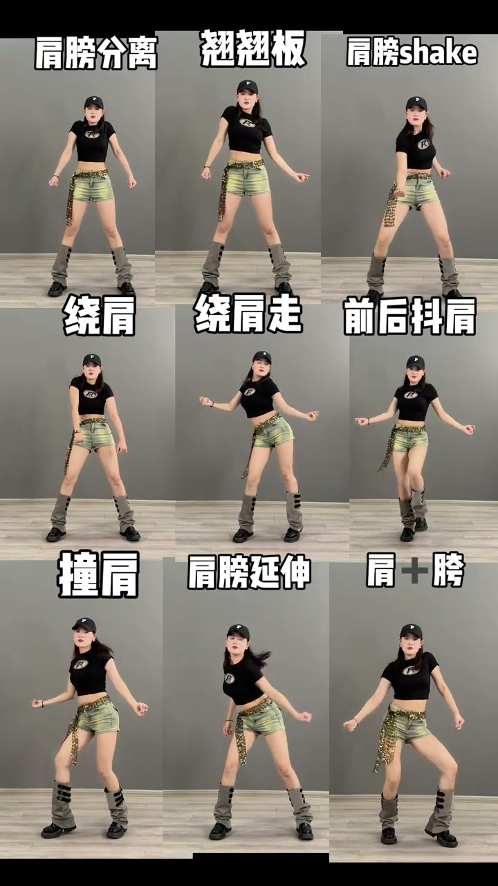
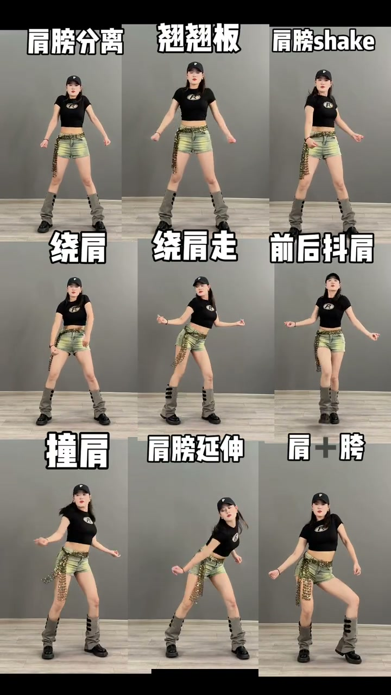

肩膀基础动作示范
00:00视频以纯视觉示范展示爵士舞肩膀基础动作，无语音讲解。9秒内连续展示多个肩膀动作。
00:03动作包括单肩提沉、双肩交替、绕肩画圆等爵士舞入门必备的肩膀基本功——肩膀是爵士舞律动的核心，几乎所有动作都从这里发力。


为什么肩膀是爵士舞的基础
00:00爵士舞的律动感很大程度来自肩膀：甩头、顶胯、wave、定点，都是以肩膀发力为起点的身体传导。
00:06零基础先把肩膀练独立——左右肩能分开动、能卡节拍，后面学任何爵士动作都事半功倍。


肩膀是爵士舞律动的发动机——先练独立，再练连贯，最后跟节奏。